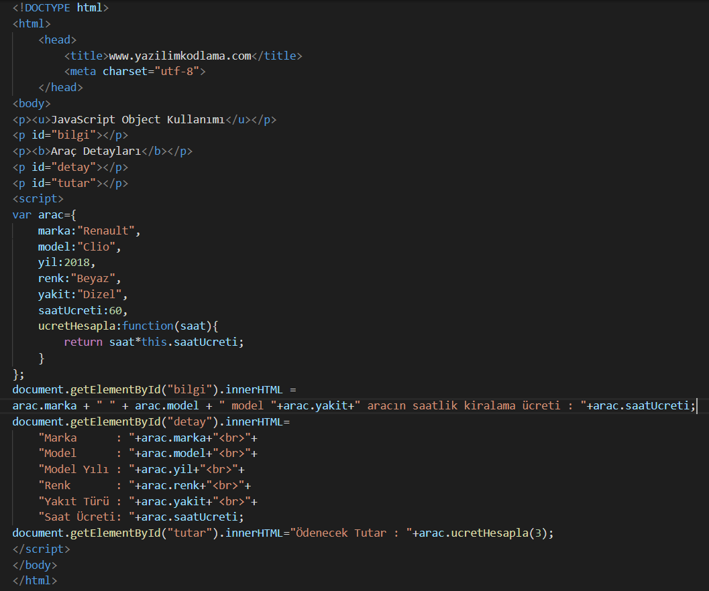

JavaScript'in Çalışma Yapısı ve Mimarisim
Javascript kodlama da kodlama yoğunluğu genelde fazladır. Kodlar genelde üstten alta doğru sıralanarak yazılır ve sunucu da tarayıcı da kodları bu şekilde sıraya dizerek yorumlar.
5 adet veri tip, 3 adet Object tipi bulunan javaScript dilinde veri tiplerini Number, String, Boolean, Undefined, ve Null (bu da bir object’dir). Object tipini ise fonksiyon, dizi, nesne (object) gibi referanslar oluşturmaktadır. Bu yazımızda JavaScript’te bir Object nasıl oluşturulur ve nasıl kullanılır bunu göreceğiz. Öncelikle Object oluşturma hangi yöntemlerle yapılır buna bakalım.
JavaScript’te nesne oluşturmak için { } süslü parantezler kullanılır.
var arac={ };
var ogrenci={ };
Yukarıdaki şekilde bir tanımlama yapıldığında içinde hiçbir şey bulunmayan arac ve ogrenci nesneleri oluşturulmuş olur.
Şimdi de oluşturulan nesnelere özellik atamasının nasıl yapılacağına bakalım.
Yukarıdaki tanımlamaya baktığımızda;
Özellik: değer
şeklinde bir atama yapıldığını ve birden fazla özellik eklendiğinde “,” virgül ile ayrıldığını görüyoruz.
Şimdi aşağıdaki örneği inceleyelim. Örneğimizde arac isimli Object (nesne) tanımlaması ve bu nesneye ait özellik tanımlaması yapılarak bu özelliklerin sayfada yazdırılması sağlanmakta.
Sayfamızı çalıştırdığımızda aşağıdaki görüntü oluşacaktır.

Şimdi de nesnemize metot tanımlaması yapalım. Metot tanımlamasını yukarıdaki örnek üzerinde gerçekleştireceğiz. Nesnemize ucretHesapla isminde bir metot tanımlayacağız. Bu fonksiyon dışarıdan bir parametre alarak çalışacaktır. Dışarıdan gönderilen saat bilgisini saatUcreti ile çarparak ödenecek tutarın hesaplanması görevini üstlenecektir.
Burada altını çizmekte fayda gördüğüm bir hususu belirtmek isterim.
Nesne içindeki özelliklerden biri metot içinde kullanılacaksa bu özellik this anahtar sözcüğü ile kullanılmalıdır. (this.saatUcreti)
Kodlarımıza ve ekran çıktısına göz atalım.
Ekran Çıktısı:
Görüleceği üzere ödenecek tutar metot ile hesaplanarak gösterilmiştir.
Şimdi basit bir örnek daha oluşturalım. Bu örneğimizde ogrenci isimli bir object’ e ait özellik ve metot tanımlaması yapacağız. ad ve soyad özelliklerinin yazdırılmasını sağlayacağız. Örneğe ait kodları;
Başka bir JavaScript nesnesi oluşturma yöntemi de constructor pattern(yapıcı desen) olarak tanımlamak mümkündür. Fonksiyon tanımlama yöntemi ile sınıf oluşturup, oluşturulan sınıf new anahtarı ile nesne olarak türetilir.